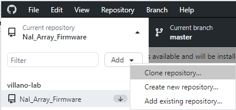

If you have not cloned the R76-Firmware repository on both the Windows and Linux machines yet, you will need to do so now.

Select this, then use the "Add" dropdown to select "Clone repository..."
In the cloning menu, select the "URL" tab
and provide https://github.com/villano-lab/R76-Firmware in the first box,
then hit "Clone."
The repository will begin cloning itself to the local machine.
Once you've cloned the (much cleaner) R76 repository,
you may wish to update the path of the "Help" bookmark in Firefox
to use this repository to use this repository instead of the old one.
You can access the bookmarks manager using ctrl+shift+O.
Navigate to "Bookmarks Toolbar", "Help",
then change NaI_Array_Firmware in the path to R76-Firmware.
Start by launching PowerShell from the Start menu. Once it is open, enter the command:
ssh middy
You are now controlling the Linux machine.
From here, switch to the packages directory:
cd packages
Then clone the repository.
git clone https://github.com/villano-lab/R76-Firmware
Once the repository is cloned,
you can exit the remote session with the command exit
or by simply closing the PowerShell window.
To pull all updates to the firmware and source files for software,
fetch and pull updates for `R76-Firmware` from GitHub.
Launch GitHub Desktop from the Start menu,
then make sure that you are currently looking at the R76-Firmware repository
(indicated at the far left of the top bar). Once you are,
use the "fetch" button on the right side of the top bar to check for remote changes.
If, after fetching, there are any new changes to be downloaded, the fetch button will change:

Each firmware directory within the R76-firmware repository should contain a flashable firmware file.
This file is named projectname.fpga – for example, Na22Trigger.fpga.
To flash the firmware to the DT5560SE, in the Home ribbon in SCI-Compiler, use the "Flash Program Tool" function.
When prompted, select the correct device (DT5560) from the dropdown menu and supply the appropriate IP address (134.84.150.42).

Once connected, select the firmware file you want to upload. When finished, the DT5560SE will automatically reboot itself into the new firmware.
Within each firmware directory is a `library` subdirectory.
The C programs provided here currently can only be built on the Linux machine,
so start by running ssh middy to connect.
Navigate to the directory containing the C code SDK for firmware firmwarename:
cd ~/packages/R76-Firmware/firmwarename/library/C/lib
And run the command
make
Once the SDK for your firmware is built,
you can run the compilation for programs associated with the firmware.
Assuming you are still at the location we left off in at the last step
(middy:~/packages/R76-Firmware/firmwarename/library/C/lib/)
you can run the command:
bash compile.sh
All compiled programs can now be run from within this directory.